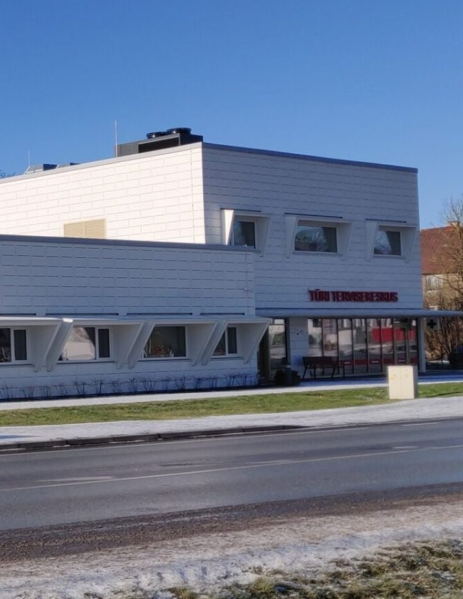

Avatud E-R 08.00 - 18.00Viljandi 26, Türi linn, Türi vald, 72212Vastuvõtuajad

Eelinfo
Tervisekeskusesse palume inimestel esmalt pöörduda telefoni või e-posti teel.
Pöördujad registreeritakse registratuuri tel. 3848620 (Katrin Abeli nimistu patsiendid tel. 3871460) arsti või õe telefonikonsultatsioonile.
Vastuvõtule tuleku vajalikkus otsustatakse telefonikonsultatsiooni käigus.
Vastuvõtule palume tulla eelnevalt kokkulepitud ajaks.
Profülaktilisele tervisekontrollile kutsutud lapsega peab kaasa tulema üks terve täiskasvanu.
Kontakt
Viljandi 26, Türi linn, Türi vald, 72212Telefon 3848620Perearsti nõuandetelefon: 1220Erakorralise abi vajadusel kiirabi telefon: 112Terviseamet: tel. 7943500, e-post kesk@terviseamet.eeHaigekassa: tel. 6696630, e-post info@haigekassa.ee